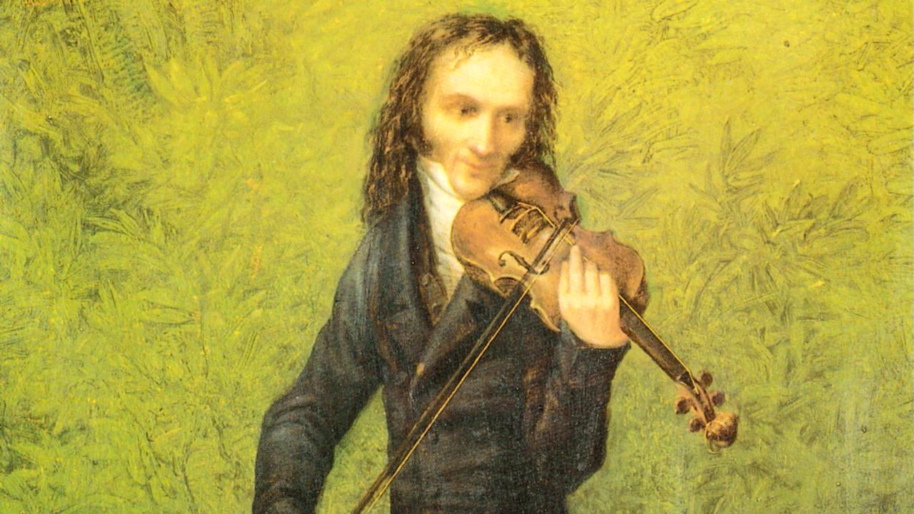

Музыкальное творчествоНикколо Паганини вошёл в историю как один из величайших скрипачей-виртуозов. Он значительно расширил технические возможности скрипки и оказал огромное влияние на развитие музыкального искусства. Его произведения требуют точности, быстроты, координации движений и выразительности. Паганини использовал пиццикато левой рукой, флажолеты и сложные пассажи, создавая неповторимый исполнительский стиль. Известные произведения
Значение творчестваМузыка Паганини продолжает исполняться на крупнейших концертных сценах мира. Его произведения помогают скрипачам развивать технику и раскрывать выразительные возможности музыкального инструмента. Творчество Паганини — сочетание виртуозности, смелости и музыкальной выразительности |
||||||||||||||
Никколо Паганини Великий скрипач-виртуоз |